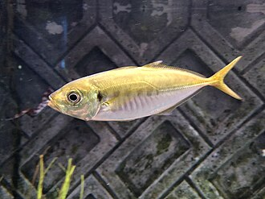

ようしょくまあじ（養殖真鯵）の生産量 都道府県ランキング
全7県の順位と、とれた量
ようしょくまあじが日本でいちばん多く育てられているのは静岡県です。234 tで、全国（553 t）の42%を占めます。

| 順位 | 都道府県 | 収獲量 | 全国に占める割合 |
|---|---|---|---|
| 1位 | 静岡県 | 234 t | 42% |
| 2位 | 宮崎県 | 142 t | 26% |
| 3位 | 愛媛県 | 83 t | 15% |
| 4位 | 長崎県 | 55 t | 9.9% |
| 5位 | 佐賀県 | 5 t | 0.9% |
| 6位 | 大分県 | 3 t | 0.5% |
| 7位 | 鹿児島県 | 3 t | 0.5% |
ようしょくまあじの生産量の推移（令和2年〜令和6年）
全国の収獲量は、令和2年の595 tから令和6年の553 tへ、7%減りました。この間、1位はずっと静岡県です。
| 年 | 全国 | 1位 | 2位 | 3位 |
|---|---|---|---|---|
| 令和6年 | 553 t | 静岡県234 t | 宮崎県142 t | 愛媛県83 t |
| 令和5年 | 532 t | 静岡県244 t | 愛媛県109 t | 長崎県42 t |
| 令和4年 | 542 t | 静岡県225 t | 愛媛県114 t | 長崎県53 t |
| 令和3年 | 586 t | 静岡県278 t | 愛媛県90 t | 長崎県57 t |
| 令和2年 | 595 t | 静岡県285 t | 愛媛県115 t | 宮崎県96 t |
この数字について
- 分類：鯵の仲間
- 全国の収獲量：553 t
- この数字が表すもの：収獲量（養殖で育てて取り上げた重さ）
- 調査：海面漁業生産統計調査（海面養殖業） 令和6年
- この品目は養殖の統計です。
- 7県分を調査（調査していない県は順位に入りません）
ようしょくまあじの生産量について、よくある質問
- ようしょくまあじの生産量が日本一の都道府県はどこですか？
- 静岡県です。海面漁業生産統計調査（海面養殖業）（令和6年）で234 tでした。
- ようしょくまあじの生産量ランキング2位・3位はどこですか？
- 2位は宮崎県（142 t）、3位は愛媛県（83 t）です。
- ようしょくまあじの生産量ランキング4位・5位はどこですか？
- 4位は長崎県（55 t）、5位は佐賀県（5 t）です。ようしょくまあじの全7県の順位は上の表のとおりです。
- ようしょくまあじの全国の生産量はどれくらいですか？
- 553 t（令和6年）です。